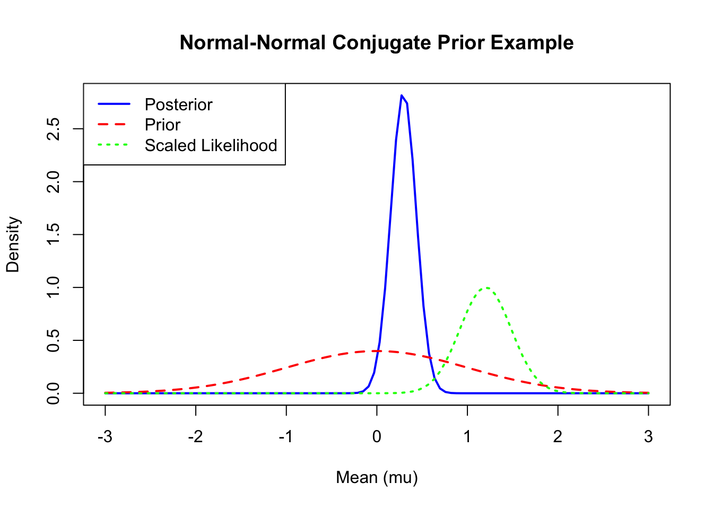

Chapter 4 Conjugate Priors
Below is an example of conjugation of priors, sample and posterior distributions.
# Set seed for reproducibility
set.seed(1)
# 1. Define the prior: Normal(mu_0, sigma_0^2)
mu_prior = 0 # Prior mean
sigma_prior = 1 # Prior standard deviation
var_prior = sigma_prior^2 # Prior variance
# 2. Simulate some data: Normal observations with known variance
sigma = 2 # Known population standard deviation
sigma_sq = sigma^2 # Known population variance
n = 50 # Number of observations
true_mu = 1 # True mean for simulation
data = rnorm(n, mean = true_mu, sd = sigma) # Simulated data
sample_mean = mean(data) # Observed sample mean
# 3. Compute the posterior: Normal(mu_n, sigma_n^2)
# Posterior precision = 1/sigma_0^2 + n/sigma^2
posterior_precision = 1/var_prior + n/var_prior
posterior_variance = 1/posterior_precision
posterior_sd = sqrt(posterior_variance)
posterior_mean = (mu_prior/var_prior + n*sample_mean/sigma_sq) / posterior_precision
# 4. Plot the prior, likelihood, and posterior
# Create a sequence of possible mu values
mu <- seq(-3, 3, length.out = 100)
# Prior density: Normal(mu_0, sigma_0^2)
prior <- dnorm(mu, mean = mu_prior, sd = sigma_prior)
# Scaled likelihood: Normal(sample_mean, sigma^2/n)
likelihood <- dnorm(mu, mean = sample_mean, sd = sigma/sqrt(n))
likelihood <- likelihood / max(likelihood) # Scale for visualization
# Posterior density: Normal(posterior_mean, posterior_variance)
posterior <- dnorm(mu, mean = posterior_mean, sd = posterior_sd)
# Plot
plot(mu, posterior, type = "l", col = "blue", lwd = 2,
xlab = "Mean (mu)", ylab = "Density",
main = "Normal-Normal Conjugate Prior Example")
lines(mu, prior, col = "red", lwd = 2, lty = 2)
lines(mu, likelihood, col = "green", lwd = 2, lty = 3)
legend("topleft", legend = c("Posterior", "Prior", "Scaled Likelihood"),
col = c("blue", "red", "green"), lwd = 2, lty = c(1, 2, 3))
## Prior: Normal(mean = 0 , sd = 1 )## Data: Sample mean = 1.201 , n = 50 , known sd = 2cat("Posterior: Normal(mean = ", round(posterior_mean, 3), ", sd = ", round(posterior_sd, 3), ")\n")## Posterior: Normal(mean = 0.294 , sd = 0.14 )## Posterior Variance: 0.02